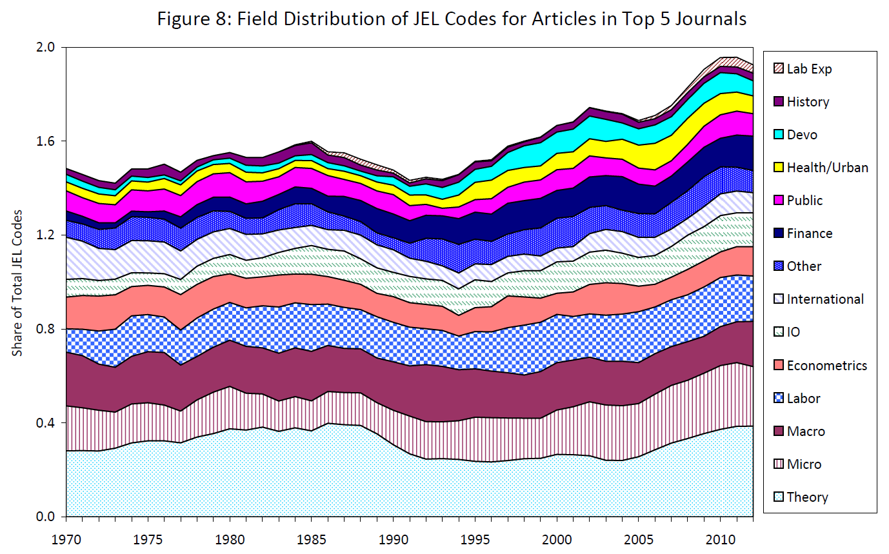
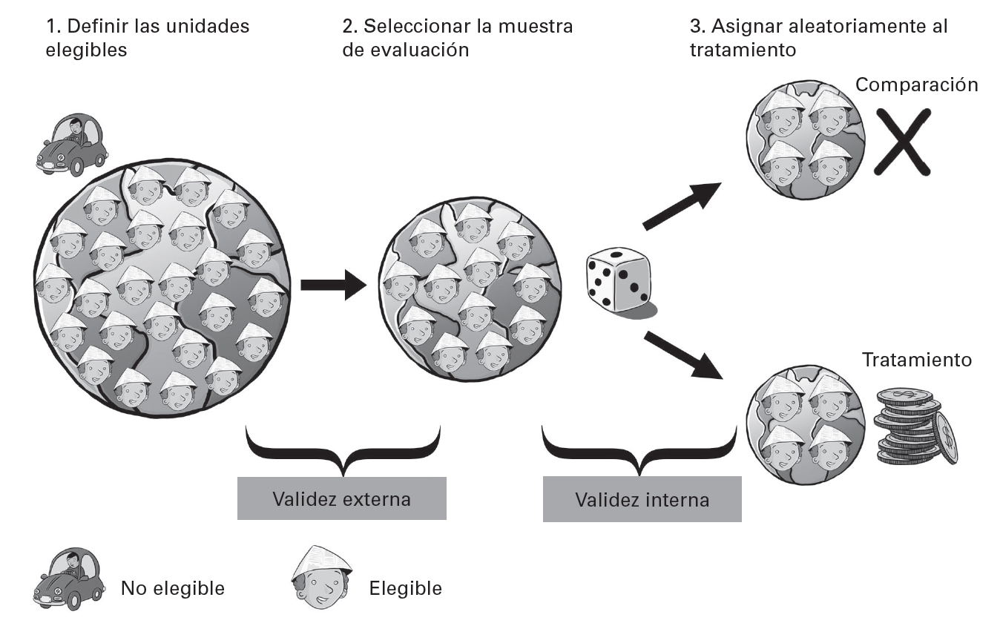
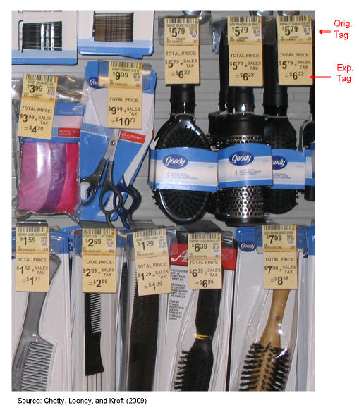
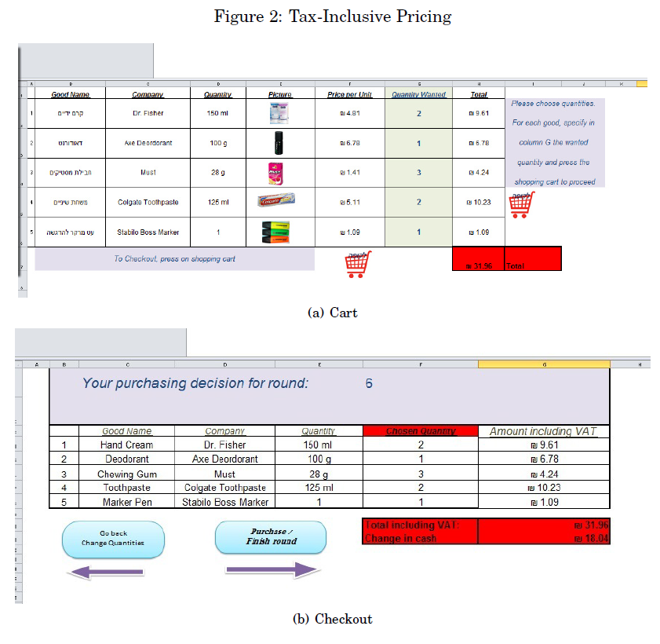
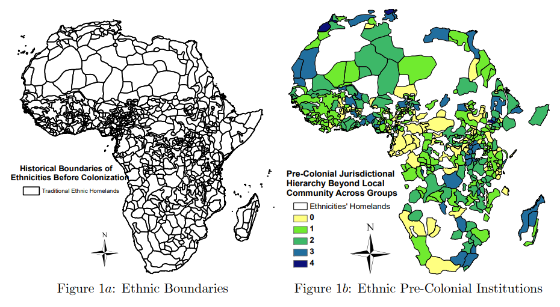
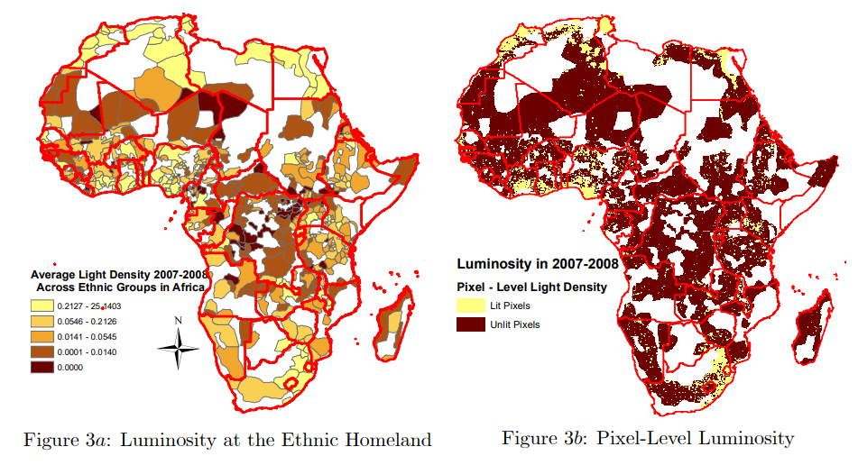
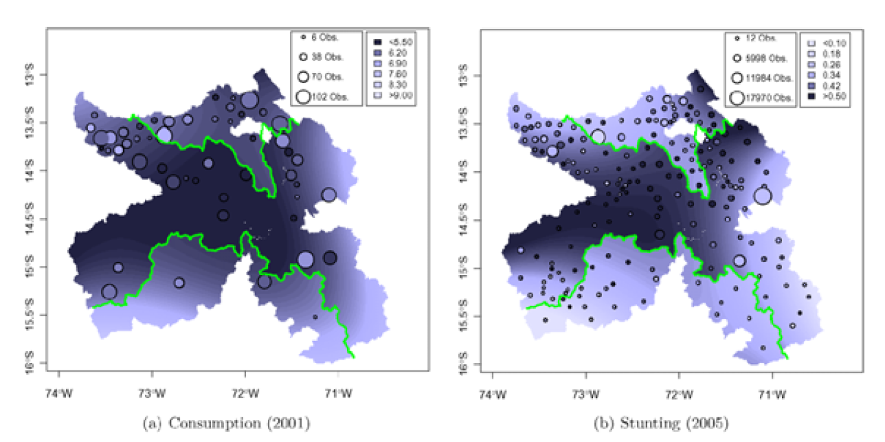

Concurso de Antecedes y Oposición Cargo Profesor Titular DE (Full Time) Historia del Pensamiento y del Análisis Económico
La importancia del diseño de investigación en la investigación empírica. Diseños experimentales y cuasi-experimentales. Resurgimiento de la economía del comportamiento
Ciencia, métodos y el problema de la causalidad
- Estándares de la ciencia
- Descripción, explicación, medición
- El problema de la causalidad
Métodos y estándares de la ciencia moderna
- Los estándares científicos modernos son el resultado de un proceso continuo y sostenido durante los últimos 6 (seis) siglos. Durante este tiempo, se han descartado muchos métodos antiguos y refinado otros tantos
- A grandes rasgos estos estándares pueden ser resumidos a partir de 2 (dos) características:
- limitan los hechos aceptables bajo fundamentos científicos a aquellos hechos verificables por observación o experimentación
- limitan los métodos admisibles a aquellos que permitan inferencia lógica a partir de hechos verificables
Observación y experimentación en la investigación empírica
- La verificación por observación es el método más antiguo y tradicionalmente usado, incluso en la antigüedad –a través de observación directa e indirecta.
- En cambio, la verificación por experimentación es más reciente [Galileo, Lavoisier, Pasteur]. Ha sido y es ampliamente usada en las ciencias formales y las ciencias naturales
- mucho menos usada en las ciencias sociales salvo por la psicología
- En la economía recién en las últimas 2/3 décadas ha tomado fuerte impulso por su utilidad para establecer causalidad
- este requiere variación controlada y el método experimental configura un estándar casi ideal para explorar estas cuestiones
¿Es importante la causalidad en economía?
- Claro que sí! Ya estos temas aparecían en los escritos y preocupaciones de Hume, Smith y otros autores.
- Hay varias razones por las que estudiar y determinar causalidad es relevante
- Conocer y atacar las verdaderas causas de un problema (y no sus efectos) –i.e inflación
- Teorización y modelización
- Diseñar políticas e intervenciones correctas
- Distinguir entre fenómenos que tienden a ocurrir conjuntamente –corelación- y fenómenos que causan unos a otros –causalidad
Correlación no implica causalidad
¿Acaso la gaviota dobló la barra?
Descripción, explicación, medición
- Una de las críticas frecuentes a la economía –incluso desde sus inicios- es que, como en toda ciencia social, resulta muy difícil argumentar que un evento es el resultado de sólo una causa.
- Sin embargo es frecuente encontrar en la historia del pensamiento y análisis económico incontables ejemplos de enunciados causales:
- “Un aumento de \(P\) conduce a una disminución de \(Qd\)”
- “El trigo no es caro porque se paga renta, sino a la inversa: se paga renta porque el trigo es caro”
- “Los precios de todo dependen de la proporción existente entre los bienes y el dinero, … Si aumentan los bienes, se vuelven más baratos; si se aumenta el dinero, aumenta el valor de los bienes”
Descripción, explicación, medición (cont.)
- Los grandes economistas del pasado en su gran mayoría carecían no sólo de las modernas herramientas estadísticas del presente sino también de registros estadísticos sistemáticos
- de hecho los primeros valiosos aportes económicos fueron hechos por no-economistas!
- Con el tiempo sus ideas y teorías se formaban (y testeaban!) alrededor de introspección, sentido común y observación, fundamentalmente cualitativa
- Podemos decir que estaban más preparados para responder qué había pasado y no cómo había pasado [Hicks (1980)]
- los primeros aportes pre-científicos fueron de una naturaleza descriptiva y no explicativa
Descripción, explicación, medición (cont.)
- Los primeros economistas científicos intentan imitar a las ciencias formales –buscan constantes (explicaciones y teorías estáticas)
- pero son estáticas en relación a un período de tiempo y contexto
- Empiezan a conectar múltiples inducciones, construir una teoría y formular hipótesis
- confluyen observación y deducción (desde la escuela clásica inglesa)
- Gran parte del análisis de la escuela neoclásica usa herramientas similares –dejando fijos a las ofertas (dotaciones) de factores (variables exógenas)
Descripción, explicación, medición (cont.)
- Ahora bien, hasta el siglo 20, el importante desarrollo de ideas, doctrinas y teorías desde el siglo 18 no había sido acompañado de medición y verificación sistemática.
- La medición y el análisis empírico moderno en economía comienza primero en los EEUU con Moore, Shcultz, and Working y luego en Europa con Tinbergen y Frisch.
- Con la irrupción de la macroeconomía, se produce una expansión sostenida tanto de la medición de la economía y estimación empírica de teorías y modelos
Diseños experimentales y cuasi-experimentales
- Desarrollo de la economía experimental
- La revolución de la credibilidad –investigación empírica
- Laboratorio vs campo vs natural
Desarrollo de la economía experimental
Se sabe que en sus elecciones de métodos, el economista apenas puede utilizar técnicas de laboratorio como en las ciencias naturales. Por un lado, los datos del mundo real son necesariamente el producto de muchas influencias distintas a las que está tratando de aislar. Por otro lado, las variables no intencionales no pueden mantenerse constantes ni eliminarse en un laboratorio de economía porque el mundo real de los seres humanos, las empresas, los mercados y los gobiernos no puede reproducirse artificialmente ni controlarse. [Edward Chamberlin, An experimental imperfect market (1948), traducción propia]
Desarrollo de la economia experimental (cont.)
- La economía experimental tienes sus inicios en los años 40s/50s aunque es recién a partir de mediados de los 80s en que se produce un auge y expansión. Hubo 3 (tres) temas centrales que preocuparon a los pioneros:
- las decisiones individuales [Allais (1953), Siegel (1957, 1959), Ellsberg (1961)]; los juegos [Flood (1952, 1958), Siegel & Fouraker (1960, 1963)]; y los mercados [Chamberlin (1948), Smith (1952)]
| Indicador | pre-1980s | 1980s | 1990s | 2000s |
|---|---|---|---|---|
| Papers con experimentos de laboratorio/Papers totales (%) [En AER, ECMA y QJE] | <0.10 | 0.84-1.58 | 3.06-3.32 | 3.8-4.15 |
Desarrollo de la economía experimental (cont.)
La revolución de la credibilidad
- En décadas recientes, importante revolución empírica rescató el tema de la causalidad –“revolución de la credibilidad”- junto con un renovado interés por el uso de la historia
- Se ponen en el centro de la escena los métodos y diseños experimentales y cuasi-experimentales (incluso por encima, al menos en su valoración, de los metódos y diseños observacionales)
Diseños experimentales y cuasi-experimentales
- Los diseños experimentales
- Una intervención o tratamiento (\(T\)) y tienen grupo de control (\(C\))
- Control de otras variables
- Aleatorización
- Los diseños cuasi-experimentales
- Una intervención o tratamiento (\(T\))
- Pueden tener o no grupo de control
- No aleatorización
Diseños experimentales: características
- El estandar ideal para atacar el problema de la causalidad son los denominados ensayos aleatorios controlados (RCT)
- consiste en experimentos que consisten en seleccionar unidades elegibles; seleccionar la muestra de evaluación; aleatorizar individuos en 2 (dos) grupos –tratamiento, control- y variar 1 (un) sólo factor entre grupos
- en este contexto, la variación en los resultados dadas las características similares de ambos grupos, se deben totalmente a al factor controlado
- consiste en experimentos que consisten en seleccionar unidades elegibles; seleccionar la muestra de evaluación; aleatorizar individuos en 2 (dos) grupos –tratamiento, control- y variar 1 (un) sólo factor entre grupos
- Ejemplos \(\longrightarrow\) sorteo de postulantes programas de empleo (PPP), sorteo de servicio militar, programa de entrenamiento de policías de un mismo distrito/seccional, icentivos salariales y auditorías en oficinas de compras públicas
Diseños experimentales: diseño de investigación
Asignación aleatoria del tratamiento
Tipos de diseños experimentales
- En economía se usan 3 (tres) tipos principales de diseños:
- Experimentos en laboratorio \(\longrightarrow\) el investigador tiene total control sobre todos los elementos –estudiantes como sujetos experimentales
- Experimentos en campo (RCTs) \(\longrightarrow\) el investigador tiene control sobre algunos elementos –jóvenes/policías/estudiantes como sujetos experimentales
- Experimentos naturales \(\longrightarrow\) escapan al control del investigador –hechos pasados como “sujetos” experimentales
- Todos son potencialmente cuestionables por temas de validez interna -certeza/grado en que resultados son atribuibles a la variable independiente y no a un “confounder”- y validez externa –generalizabilidad a otras poblaciones
Laboratorio vs campo vs natural
- Crítica a los experimentos es sobre la base de comparar s/ grado de realismo
- Laboratorio \(\longrightarrow\) mayor control, menor realismo
- Campo \(\longrightarrow\) menor control, mayor realismo
- Natural \(\longrightarrow\) mínimo control, máximo realismo
- Pero realismo no es la característica distintiva entre los diferentes tipos
Cuestión central
Métodos experimentales deberían ser comparados principalmente en relación a cuál ofrece la mejor manera de aislar el efecto causal de interés
Laboratorio vs campo vs natural (cont.)
Visibilidad de los impuestos y conducta del consumidor. La economía pública ha estudiado teórica y empíricamente la reacción de consumidores ante cambios de impuestos. Pero un tema importante poco estudiado es: ¿los consumidores cambian su conducta si saben explícitamente –es decir si se visibiliza de alguna forma cuánto pagan de impuestos indirectos en el precio final de un bien? Esto se ha estudiado tanto en laboratorio [Feldman & Ruffle (2015), Morone et al (2018)] como en campo [Chetty et al (2009)].
Laboratorio vs campo vs natural (cont.)
- Sea un resultado de interés, \(Y\) (nivel de consumo de un bien) y un conjunto de determinantes de \(Y\), como \((X_{1},X_{2},...,X_{N})\). Supongamos además:
\[\begin{equation} Y=f(X_{1},X_{2},...,X_{N}) \end{equation}\]
- El efecto causal de \(X_{1}\) sobre \(Y\) es el efecto de variar \(X_{1}\) manteniendo invariable \(\tilde{X}=(X_{2},...X_{N})\)
- en el campo \(X_{1}\) es el grado de información en la etiqueta de precio sobre la cantidad consumida de un bien (\(Y\))
- en el laboratorio \(X_{1}\)…también pero hay diferencias
Laboratorio vs campo vs natural (cont.)


Laboratorio vs campo vs natural (cont.)
- A menos que \(f\) sea separable en \(X_{1}\) de modo que:
\[\begin{equation} Y=\phi{X_{1}}+g(\tilde{X}) \end{equation}\]
- el nivel de respuesta de \(Y\) a \(X_{1}\) dependerá del nivel de \(\tilde{X}\) \(\longrightarrow\) \(Y\), \(p^{otr}\), gustos, cuestiones climáticas
- en estas condiciones existe un problema para determinar el efecto causal y estos es común a todos los tipos de experimentos –laboratorio, campo y natural
- ¿Es más facil controlar la variación de todas esas variables en un laboratorio que en campo/natural? Probablemente si.
Experimentos naturales
- Historia, economía y estadística
- El qué paso y cómo pasó
Experimentos naturales
- Un experimento natural es esencialmente una combinacion entre historia, teoría económica y estadística
- Existen incontables experimentos naturales de los que pueden valerse los eonomistas para estudiar efectos causales asociados a ciertas intervenciones “naturales”
- unificación/desmembramiento político; creación de impuestos con corte geográfico; instituciones coloniales de trabajo forzado; pisos impositivos arbitrarios; introducción de diferentes metodos de votación, etc
- En definitiva, ofrece muchas posibilidades pero tema de validación externa
Experimentos naturales
- Card & Krueger (2000) estudian el impacto de subir el salario mínimo sobre el empleo \(\longrightarrow\) predicción teórica (neoclásica) es que el impacto es negativo
- usan un experimento natural en el que dos estados contiguos (New Jersey y Pennsylvania) tenían mismo salario minimo en 1992 (4.25) y New Jersey lo sube a 5.05 \(\longrightarrow\) foco en sector de comida rápida y toma sólo aquellos locales de Pennsylvania cercanos a la frontera geográfica \(\longrightarrow\) no hay efectos significativos sobre el empleo
- Michalopoulos & Papaioanou (2013) estudian la relación entre organización política de naciones africanas previo a la colonizacion y el desarrollo economico regional en 2000 \(\longrightarrow\) efecto causal positivo de centralización política
Experimentos naturales (cont.)

Experimentos naturales (cont.)
Centralización política y desarrollo económico regional (Michalopoulos and Papaioannou (2013))
Experimentos naturales (cont.)
Centralización política y desarrollo económico regional (Michalopoulos and Papaioannou (2013))
Experimentos naturales (cont.)
- Jensen, QJE 2007 \(\longrightarrow\) introducción de celulares –mejora de información de mercado- en Kerala (India) condujo en el mercado del pescado a:
- dramática reducción en dispersión de precios (arbitraje) y eliminación total de excesos
- casi perfecta adherencia a la Ley del Precio Único
- Dell, ECMA 2010 \(\longrightarrow\) efectos de largo plazo de instituciones la mita en Perú:
- reducción del consumo en 25% en distritos con mita versus sin mita y aumentos de un 6% en la prevalencia de retrasos en el crecimiento de niños
- canales de causación \(\longrightarrow\) tenencia de la tierra y provisión de bienes públicos
- reducción del consumo en 25% en distritos con mita versus sin mita y aumentos de un 6% en la prevalencia de retrasos en el crecimiento de niños
Experimentos naturales (cont.)
Persistencia institucional y efectos a largo plazo (Dell (2010))
Economía del comportamiento. El economista como ingeniero, artista y plomero.
- Economía y psicología
- Resurgimiento de la ecnonomía del comportamiento
- El rol del economista y las grandes preguntas
Economía del comportamiento
- En los últimos 20 años, uno de las sub-areas más dinamicas de la economía es la economía del comportamiento –una yuxtaposición de psicología, teoría economíca y economía experimental.
- Una forma interesante de definir a la economía del comportamiento es por la negativa
- se enfoca en algunas formas específicas y concretas en que los individuos se apartan del homo economicus
- En otras palabras, la economía del comportamiento suele partir de supuestos menos restrictivos sobre las motivaciones de los individuos
Economía del comportamiento (cont.)
- Las 3 (tres) formas en que los individuos se “desvían” de los modelos y teorías estándar son:
- creencias no estándares –sobreconfianza, sesgo de proyección
- decisiones no estándares –atención limitada, presión social
- preferencias no estándares – problemas de auto-control, preferencias sociales
- En general dan lugar a diferentes implicancias y resultados de los modelos y supuestos tradicionales –i.e individuos no optimizan, conductas no racionalidad estricta, etc.
Economía del comportamiento (cont.)
- Ofrece nuevas posibilidades de testear y verificar hipótesis, supuestos y teorías del pasado
- homo economicus
- utilidad marginal decreciente
- optimización intertemporal
- Esto retroalimenta la investigación en la historia del pensamiento y de las ideas económicas
- posible descartar en base a observación/experimentación teorías largamente enraízadas –salario mínimo causa desempleo
- revisar supuestos y teorías no mainstream y darles nuevo respaldo empírico –consumo conspicuo
Consideraciones sobre el rol del economista
- Schumpeter argumenta que parte de la crítica a los economistas y a las escuelas económicas se debe a la frecuente asociación con alineaciones con escuelas y filosofías políticas con las que terminaron identificadas; similarmente, en siglo XX muchos economistas alimentaron su propensión a recomendar políticas, recetas y soluciones sin hacer claramente explícitas las bases normativas contenidas en esos consejos y razonamientos
- En los últimos 30 años, esta tendencia no ha desaparecido pero ha mutado a un rol mucho más acotado y menos ambicioso
- es la era del “economista como plomero” [Duflo (2017)]
- le preocupa más el cómo hacer las cosas que el qué hacer –su tarea es en parte remendar, hacer sintonía fina.
- es la era del “economista como plomero” [Duflo (2017)]
¿Y las grandes preguntas?
- Es frecuente escuchar la crítica de que la revolución de la credibilidad ha privilegiado la sofisticación y rigurosidad técnica para estudiar problemas interesantes pero puntuales, aislados y poco generalizables
- …en desmedro del estudio de problemas más relevantes, generales y aún no resueltos de las grandes areas de la economía [¿la inflación (y su aceleración) tiene un componente de conflicto? ¿por qué las acciones tienen una sustancial prima de retorno sobre los bonos que no se debe sólo al riesgo diferencial?
- ¿Los economistas se están alejando de las grandes preguntas?
El avance no es lineal en la economía (y la HPE es testigo!)
- Los avances en los desarrollos económicos no han sido siempre lineales ni graduales; las revoluciones en los datos, tecnicas y métodos han producido olas de contribuciones.
- Es posible que la rápida acumulación de evidencias, experiencias e investigaciones empíricas permita eventualmente una nueva revolución teórica en la economía
- esto posiblemente sea no sólo en una dimensión vertical –refinación y especialización en temas tradicionales- sino también en una dimensión horizontal –vinculación con otras disciplinas.
Bibliografía utilizada
Bibliografía seleccionada
- Schumpeter, J. A. (2006). History of economic analysis. Routledge.
- Epstein, R. J. (2014). A history of econometrics. Elsevier.
- Card, D., & DellaVigna, S. (2013). Nine facts about top journals in economics. Journal of Economic literature, 51(1), 144-161.
- Duflo, E. (2017). The economist as plumber. American Economic Review, 107(5), 1-26.
- Levitt, S. D., & List, J. A. (2009). Field experiments in economics: The past, the present, and the future. European Economic Review, 53(1), 1-18.
- Thaler, R. H. (2017). Behavioral economics. Journal of Political Economy, 125(6), 1799-1805.
Bibliografía seleccionada (cont.)
- Dell, M. (2010). The persistent effects of Peru’s mining mita. Econometrica, 78(6), 1863-1903.
- Jensen, R. (2007). The digital provide: Information (technology), market performance, and welfare in the South Indian fisheries sector. The quarterly journal of economics, 122(3), 879-924.
- Diamond, J. (1986). Laboratory experiments, field experiments, and natural experiments. Community ecology, 3-22.
- Serra, D. (2012). The Experimental method in economics: old issues and new challenges. Revue de philosophie économique, (1), 3-19.